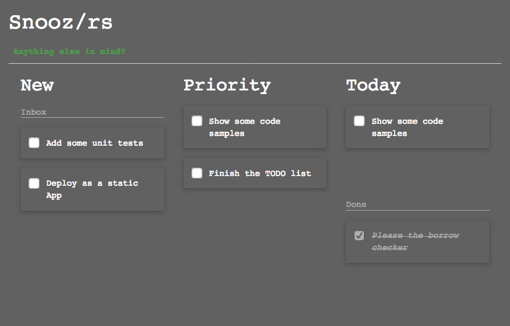
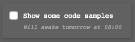
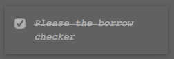

Building a Web App
in Wasm
with Rust and Yew
Whoami
Florent Bécart
Why Rust?
Web Assembly
Web Assembly
♥
Rust
Compilers
Nightly rustc
Cargo Web
Github: koute/cargo-webCargo Web
cargo web startCargo Web
# Using Emscripten
cargo web start --target=wasm32-unknown-emscripten
# Using native nightly rustc support
cargo +nightly web start --target=wasm32-unknown-unknown
Cargo Web
cargo web test
cargo web deploy
stdweb
Github: koute/stdwebstdweb
let message = "Hello, World!";
let result = js! {
alert(@{message});
return 2 + 2 * 2;
};
println!("2 + 2 * 2 = {:?}", result);
stdweb
let button = document()
.query_selector("#hide-button").unwrap().unwrap();
button.add_event_listener(move |_: ClickEvent| {
for anchor in document().query_selector_all("#main a") {
js!(@{anchor}.style = "display: none;";);
}
});
Yew
Github: DenisKolodin/yewArchitecture of a Yew app
Example: a TODO list!
Let's look at some code: the task card

Takeaways
Thank you!
Twitter: @fbecart
Github: fbecart